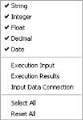
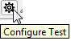
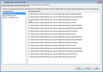

Test Project
The Test Project enables the user to execute multiple test cases automatically on a component without prior review. In contrast to Interactive Tester the Test Project execution is performed by the Job Server, which enables large data sets to be tested that can include a complete end to end test if required.
|
The aim of the Test Project is to give clients the opportunity to test their strategies by simulating the runtime process. To significantly improve the performance time for executing the Test Project, the serialization/deserialization and .ser file generation stages of the process are now skipped and the testing proceeds directly with testing the executable strategy. Should users want the .ser file to be generated, the batch_tester_config.properties file can be configured to output the .ser file. Refer to the Decision Analytics Servers Configuration Guide for more information. |
| Only .ser files that are generated during strategy deployment can be used in the Test Project. |
The Test Project:
- enables users to use preconfigured Input Data Connections as data sources.
- submits a job that can be viewed through the job console, like any other job, but job execution can also be followed from within the Test Project editor.
- execution can use deployed artifacts (Decision Process Flows and Enrichment Access Strategies) that have been previously uploaded to the Job Server using the Manage Test Resources window, enabling end to end testing of Business Process Flows as well as Decision Process Flows.
-
using the Batch Process Flow's Data Extraction process, transaction data can be extracted that can be used in the Test Project.
- allows the user to review summary results on the screen; they are also written directly to file for future reference.
- can, optionally, produce trace information detailing the all the intermediate states of each characteristic during the test.
- settings are stored, allowing the user to rerun the tests at any time.
- can be exported, and test projects can be saved as templates for re-use in other projects.
Preconfigured Test Projects can be created for:
- Decision Process Flows
- Business Process Flows
- Enrichment Access Strategies
- Simple decisioning components excluding Class Sets and Derived Data Scripts
A Test Project is created from the Explorer window. A Test Project can be created for certain components that accept inputs and produces an output such as Derived Data Script, Class Sets and Scorecards etc as well as Decision Process Flows, Business Process Flows and Enrichment Access Strategies.
The Test Project editor enables the user to carry out a test. The user can set up the conditions to run large amounts of test data through a component using this editor.
To create a Test Project
- From the Explorer window, right click on the component for which you want to create a Test Project.
- Select New Test Project.
- In the Create component dialog, enter the name of the Test Project.
- Click on the OK button. The Test Project editor opens in the Main editor window and you can set up the conditions to run a Test Project.
The Test Project component is added to the Explorer window.
|
To use the EXEC function external call from within the Test Project, the user must modify the studio configuration file as described in the Decision Analytics Servers Configuration Guide. |
The studio allows an end to end testing of large Business Process Flows that contain Decision Agent or Enrichment Agent Calls. The goal of this testing is to validate that the output of the Business Process Flow matches users expectations before deploying the Business Process Composition.
The testing process will skip any Connectivity Calls, chained Decision Agent Strategies, calls to Machine Learning Plugins and Page Flows.
To run an end to end test using Test Project
- From the Explorer window, right click on the Business Process Flow you wish to test and select New Test Project. The Test Project editor is displayed.
- Drag the component from the list of Input Data Connection components in the Resources window to the Input Data field.
|
If numeric or date fields are left blank in the data source, they will automatically be interpreted as Null. |
- Click on the ellipsis button next to the Results data field to display the Select Directory dialog.
- Locate or, if necessary, create the folder in which the test results will be stored, and click on Open to close the dialog.
- To control which characteristics are written to the results .csv file, specify a results data definition.
The Results Data Definition allows users to control which characteristics are written to the results CSV file.
To add an embedded results definition to the test project
- With the Test Project editor open, right click in the Results Definition field, and select Insert Embedded.
- The Insert Embedded Component dialog is displayed:
Specify a name for the results data definition.
- Click on the OK button to confirm the selection.
The dialog will close and display the Embedded Results Data Definition editor:
- This editor is the same as the Results Data Definition editor, with the difference that added temporary results characteristics (Test_Results) are appended to the end of the list of Logical Characteristics:
These are unmapped temporary results characteristics created for the Embedded Results Data Definition, and are saved in the results file.
- Click the Filter for Data Types button to limit the number of characteristics displayed in the Logical Characteristics table:

The Filter for Data Types icon will indicate when the range of characteristic types displayed has been narrowed down.
will indicate when the range of characteristic types displayed has been narrowed down.Execution Input: Filters for those characteristics identified as inputs to the component being tested.
Execution Results: Filters for those characteristics identified as outputs of the component being tested.
Input Data Connection: Filters for those characteristics included in the Input Data Connection.
- Drag the required characteristics in the Selected Characteristics field, then save and close the embedded results data definition.

The embedded results data definition is now complete. The results data definition name will be displayed in the field.
The Results Data Definition allows users to control which characteristics are written to the results CSV file.
To add a referenced results data definition to the test project
- With the Test Project editor open, click on the Resources window. The valid component types will be listed.
- Expand the Results Data Definition list to display all the available results data definitions.
- Drag and drop the required results data definition onto the Results Definition field.
This results data definition name will be displayed in the field.
- Select the Null Handing option required from the drop down fields.
|
When Null values are supplied, the Test Project log will include additional errors that do not specifically name the characteristic with invalid data. Subsequent errors in the log will identify the relevant characteristics; these error messages provide the full runtime error tracing. Below is an example error message: 'ERROR Unable to create an appropriate value for characteristic with external name "[null value for characteristic at index 0 and array index 0]" in data source "Tester"' The Null Handling property is not linked to the DA null handling solution property. For consistency, it is recommended that the property in the Test Project is set to the same value as the solution property. |
|
|
The default is set to Use Default Values, which causes the studio to use the default values; the characteristic(s) which used the default value(s) can be tracked. This field can be changed to Error on Null, which causes an error that can be seen in detail if tracing is enabled (if tracing is disabled, the error can also be seen but will not contain as much detail). |
- From the Associated Custom Default Values drop down box, select the Custom Default Value component as required.
- Click on the Configure Test icon to access the Configure Test dialog where the test will be configured preventing the user needing to interact with the Job Server.

The Configure Test dialog will open.
| The content of the flow being tested will determine which tabs need to be configured. If the flow does not contain any Decision Agent Calls, the dialog will open with the Enrichment Agent Calls tab selected and the Decision Agent Calls tab will be empty. If the flow does not contain any Enrichment Agent Calls the dialog will open with the Decision Agent Call tab selected and the Enrichment Agent Calls and External Data Source Definition tabs will be empty. |
- In the Decision Agent Calls, tab select the deployed Decision Process Flows (.ser file) that will be executed for each Decision Agent Call.
| Only the deployed Decision Process Flows with aliases matching those used in the Decision Agent Call, and which have been uploaded to the Job Server using the Manage Test Resources window, will be listed for selection. |
- In the Enrichment Agent Calls tab, select the deployed Enrichment Access Strategies (.ser file) that will be executed for each Enrichment Agent Call.
| Only the deployed Enrichment Access Strategies that contain the same Access Strategy ID as that used in the Enrichment Agent Call, and which have been uploaded to the Job Server using the Manage Test Resources window, will be listed for selection. |
- In the External Data Source Definition tab, for each Interface Pack, select the characteristics that will be used to match the response data and used in the corresponding test.

- Click OK. The dialog will close and return you to the Test Project.
| The ability to activate a Trace is disabled when a Business Process Flow is being tested. This is because tracing has not been implemented in a Business Process Flow. |
- Type in any additional notes in the Notes field (this is a free text field).
- Click on the Execute Test button to run the test.
The Run History provides a one-row history for each run. Subsequent tests are added to the Run History table.
The Test Project is run from the Explorer window.
To run a test project
- From the Explorer window, right click on the test project component. The Test Project editor is displayed.
- Drag the component from the list of Input Data Connection components in the Resources window to the Input Data field.
- Click on the
 button next to the Results data field to display the Select Directory dialog.
button next to the Results data field to display the Select Directory dialog. - Locate or, if necessary, create the folder in which the test results will be stored, and click on the Open button to close the dialog.
- To control which characteristics are written to the results CSV file, specify a results data definition.
- Select the Null Handing option required from the drop down fields.
- If applicable select the Associated Custom Default Value drop down box and select the Custom Default Value component as required.
- In the Test Run Setup section of the editor, specify any trace options (Trace Pathways, Trace Characteristics Reads, or Trace Characteristic Writes) using the Trace buttons
 .
. - Optionally, limit the number of records to trace by typing a number in the First: field (i.e., trace first X records in the data file).
- Type in any informational notes in the Notes field (this is a free text field).
- Click on the Execute Test button
 to run the test.
to run the test.


{kind=link}
{kind=link}
{kind=link}
{kind=link}
{kind=link}
{kind=link}
{kind=link}
The Run History provides a one-row history for each run. Subsequent tests are added to the Run History table.
The test results are displayed under the Summary Results, Trace, and Log tabs.